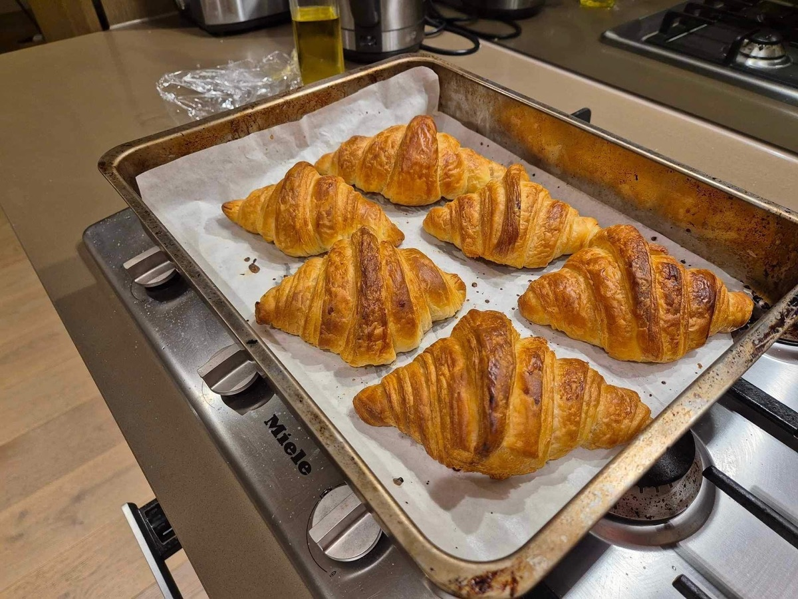
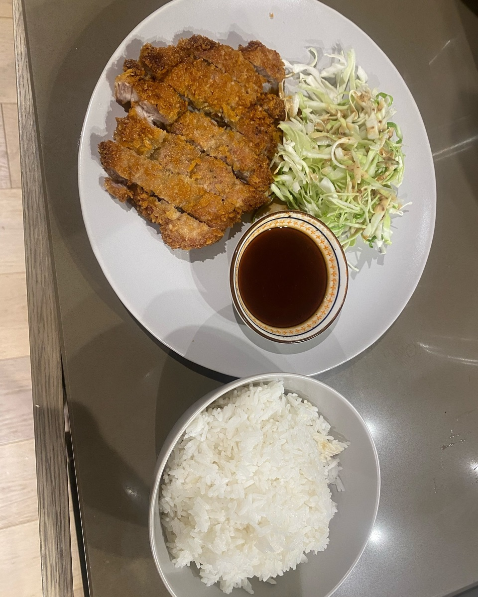
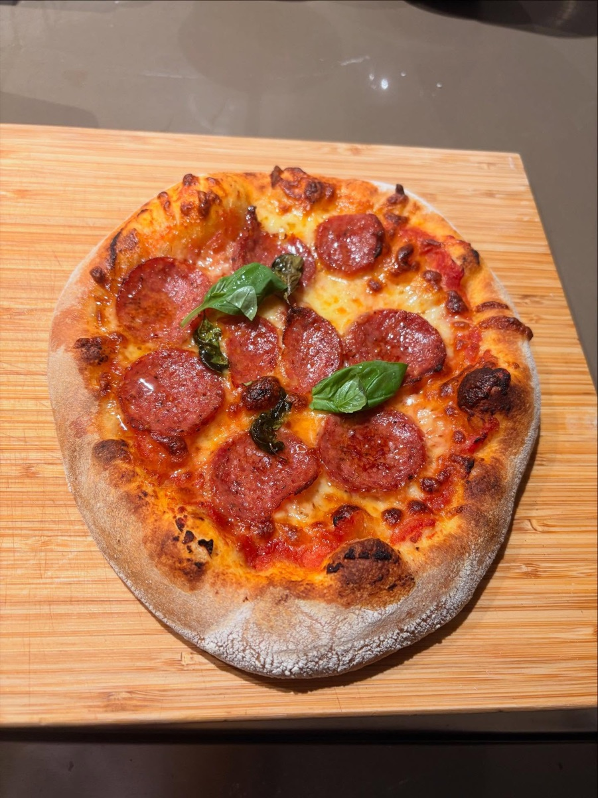

Order 05Bread

Salt Bread (Shio Pan)
- 2.5 hrs including proofing
- Makes 6
Things I've cooked and baked. Tap a dish to get the recipe.
Order 05Bread
Order 06Bread

Order 07Dumplings

Order 08Dinner

Order 09Pastry

Order 10Dinner

Order 11Dinner
